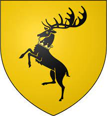
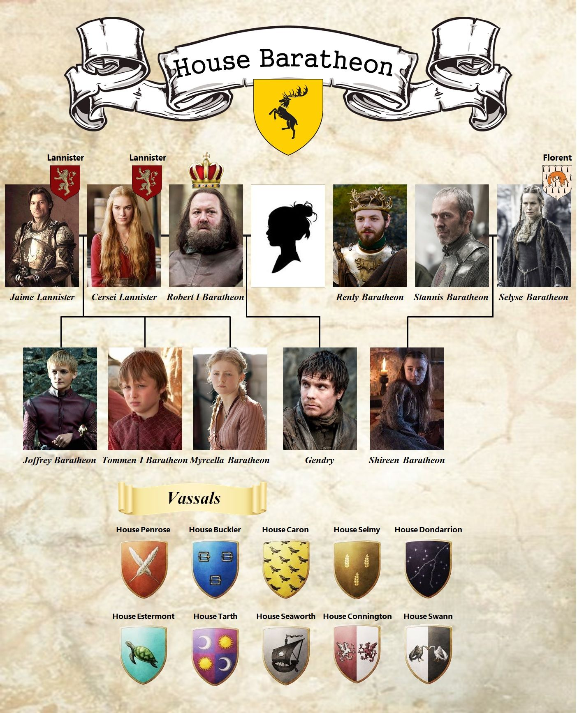

House Baratheon
House Baratheon of Storm's End is a Great House of Westeros that traditionally rules the Stormlands on the eastern coast of Westeros, aptly named for its frequent storms, from their seat of Storm's End. House Baratheon became the royal house of the Seven Kingdoms (as House Baratheon of King's Landing) after Robert Baratheon led a rebellion against the Targaryen dynasty. At the end of the rebellion, Robert ascended the Iron Throne as Robert I and married Cersei Lannister after the death of Lyanna Stark. House Baratheon became officially extinct after the deaths of Stannis Baratheon and his family, but was revived when Robert's last known bastard was legitimized by Queen Daenerys Targaryen as Gendry Baratheon. House Baratheon's sigil is a crowned black stag on a gold field and their house words are "Ours is the Fury."
Family Tree
The Storm's End

History
House Baratheon was founded by Orys Baratheon, a general in the army of King Aegon I Targaryen, the founder of the Targaryen dynasty who conquered the Seven Kingdoms. Orys Baratheon was also rumored to be Aegon's bastard half-brother. He defeated Argilac the Arrogant, the last of the Storm Kings, and captured his castle of Storm's End. For his accomplishments, Orys was made Lord of Storm's End and founded House Baratheon. Orys took the sigil and words of the defeated House Durrandon as his own, cementing his rule over the Stormlands by marrying Argella Durrandon, the daughter of the fallen Argilac. Orys Baratheon leadering his troops in Storm's End. Orys Baratheon leading his troops in Storm's End. House Baratheon lineage A history book with information on the early members of House Baratheon. Robert Baratheon led a rebellion against King Aerys II Targaryen, resulting in the overthrowing of the Targaryens. Robert became the new king; Renly became Lord Paramount of the Stormlands, ruling the Stormlands from Storm's End; Stannis became the new Lord of Dragonstone. This formed the cadet branch House Baratheon of Dragonstone.